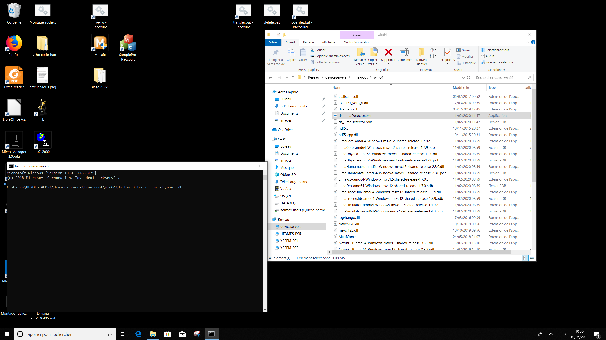

The control schematic of the ptychography set up is shown in below(Fig.1). A PyTango script is written to control
(1) the camera
(2)Pixellator software
(3) beamline parameters
The acquisition of the image by the camera is initiated by the trigger from the pixellator software.
Fig.1: Control schematics .
Converting STXM to ptychography configuration
Installing the camera
Replacing the PMT with Camera:
Carefully unmount the PMT wrap it with Al foil and safely keep it inside the STXM chamber itself. Make sure that it is placed on a safe place that it does not interfere in the Z-translation of the stage.
Install the camera:
Remove the glass cover off the chip and place the Ti cone. If the chip size is different make sure that the cone is in place by sticking some capton tapes. Install the camera inside the chamber using a rectangular Al plate on the translation stage. Make sure that the camera is placed approximately 6.5 cm from the sample. Please refer to this of the images during the first run for references Link
Connect all the wires:
This includes a power chord, trigger. The trigger connection have two sma connectors, use the one with a elbow sma.
Initializing the camera
Make sure that the camera is recongnized : Go to start and type "Gestionnaire de peripheriques", a window will open and under hermes-pc5 - Peripherique d'acquisition d'imagesyou should see "Dhyana 95". If yes the camera is initialized. Fig.2: Camera recognition.
Start the LIMA device: go to the directory Reseau/deviceservers/lima-root/win64 - "ds-LimaDetector.exe" is the file you are looking for. Open a terminal type "\\Reseau\deviceservers\lima-root\win64\ds-LimaDetector.exe dhyana -v1", this would open a GUI with name Jive5.6 shown in Fig.4 .

Fig.3: Start device.Fig.3: Launching Dhyana specific controls.
In Jive 5.6 scroll down and find "i10-m-cx1" open the tree "dt". Inside "dt" double click "dtc-dhyana" this will open the temperature control of the camera and double click on "dtc-dhyana-specific" which would open the camera controls.
Fig.4: Launching Dhyana specific controls.
Starting the python environment: Open a terminal in the STXM linux computer and type "ssh srv4 - X"